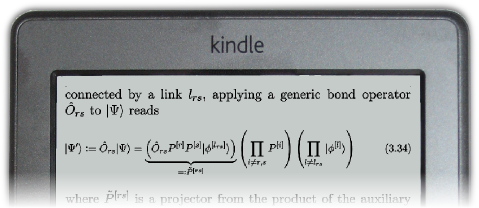
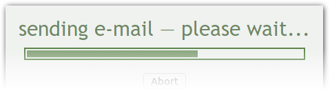
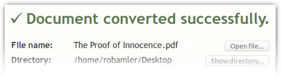
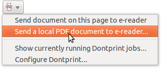
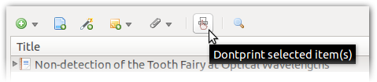
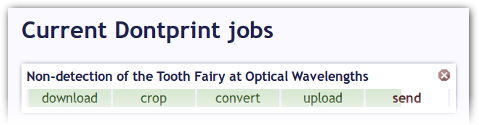

Features & Screenshots
 |
Automatically detect journal websites.Dontprint automatically detects whenever the page in your browser window corresponds to a scientific article—no matter if you're reading a preprint on arXiv.org or an abstract on the website of any major publishing company. Just click the Dontprint icon in the address bar and start reading the article on your e-reader. |
|  |
Reformat articles for a small screen.Dontprint uses a program called "k2pdfopt" to rearrange the text flow of articles so that you can read them comfortably on the small screen of your e-reader. This works even with multi-column articles that contain figures and complicated equations. Dontprint knows the exact screen size of your e-reader and has an internal database of special formatting instructions for many common journals. |
|  |
Send articles to your e-reader by e-mail ...If your e-reader can receive documents via e-mail, then you can configure Dontprint to send articles directly to your device. This works with all modern generations of the Amazon Kindle and also with other e-readers. You will get clear instructions on how to set up your e-mail addresses when you use Dontprint for the first time. |
|  |
... or transfer documents manually via USBYou can also choose to transfer the optimized documents to your e-reader manually over a USB cable. This is useful if your e-reader cannot receive documents by e-mail. |
|  |
Use Dontprint also for PDF documents on your disk.In addition to sending articles directly from the websites of journals without even having to download them manually Dontprint also allows you to pick any PDF document that is already on your computer and sends it to your e-reader in an optimized layout. |
|  |
Integrate with Zotero (optional).If you use the Zotero Firefox add-on then Dontprint will also augment its functionality. You can send attached PDF documents from your Zotero library to your e-reader with a single click. Zotero is not a requirement for Dontprint, though, and you don't have to install Zotero in order to use Dontprint. |
|  |
Dontprint with a single click—easier than printing.Dontprint processes each article you send to your e-reader in a number of steps to make sure you get the best possible result. But most of the time this all happens automatically and all you have to do is to click a single button. Dontprint learns on the go so even if it sometimes does need your help, e.g. finding the correct page margins of a particular journal, it will become smarter the more you use it. |
Acknowledgements
Dontprint heavily relies on software developed independently by third parties:- To optimize the layout of PDF documents for small screens Dontprint uses a program called "k2pdfopt", developed by William Menninger.
- To detect web sites of publishers and extract meta data such as article titles and journal names Dontprint uses parts of the functionality developed for Zotero. Zotero is the trademark of George Mason University. The developer of Dontprint is not affiliated with Zotero.
Free Software License
 Dontprint is free software: you can redistribute it and/or modify it under the terms of the GNU Affero General Public License, version 3 (AGPLv3), as published by the Free Software Foundation.
Dontprint is free software: you can redistribute it and/or modify it under the terms of the GNU Affero General Public License, version 3 (AGPLv3), as published by the Free Software Foundation.
This program is distributed in the hope that it will be useful, but WITHOUT ANY WARRANTY; without even the implied warranty of MERCHANTABILITY or FITNESS FOR A PARTICULAR PURPOSE. See the GNU Affero General Public License for more details.
A copy of the GNU Affero General Public License version 3 is available on the page "license agreement".
A small part of Donptrint is implemented as a script that runs on a web server. The above copyright statements also apply to the server-side part of Dontprint. The current version of the server-side source code can be accessed on Google Drive by registered Google users. A static copy of the server-side source code that can be accessed anonymously is also available.
The source code of Dontprint is available on GitHub. The source code of the third party tool "k2pdfopt", which is used to optimize the layout of PDF documents, can most easily be obtained from the original website. For legal reasons, a copy of the source code of k2pdfopt can also be requested from the author of Dontprint (see contact page; please refrain from this option and consider downloading the source code yourself).